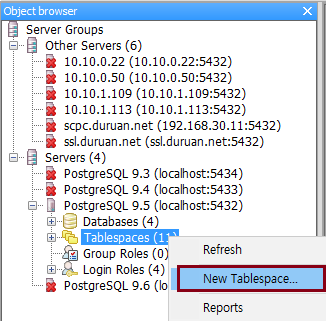
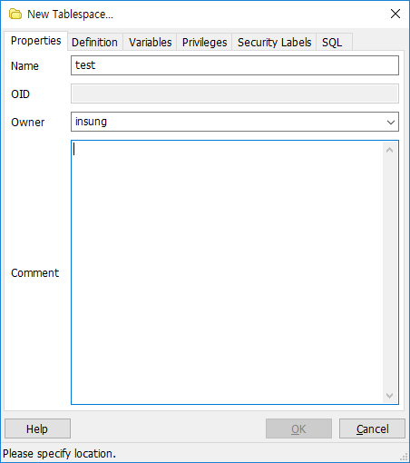
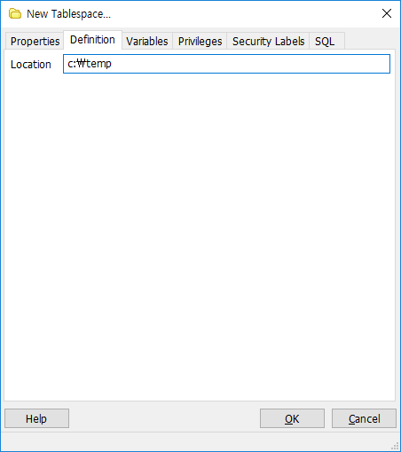
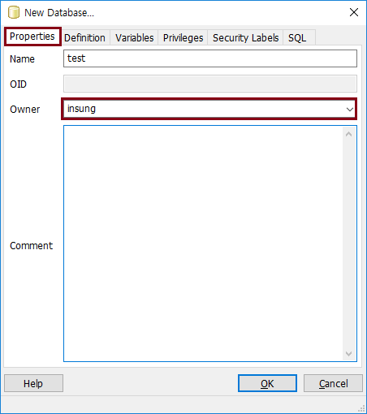
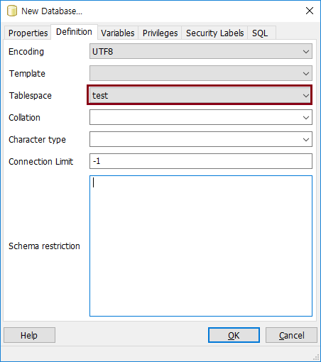

PostgreSQL 데이터베이스 구조
복원
-
postgres 에서 복원하는 방법에 대해 알아보자.
-
psql, pg_restore, pgAdmin3 tool restore 에 대해 알아보자.
복원을 하기 전
-
복원을 하기 전에 반드시 계정, Tablespace, Database 를 미리 생성해야 한다.
-
백업 했을 시, Tablespace 를 그대로 만들어도 되지만 해당 Tablespace 가 없다면 Database 의 기본 Tablespace 로 자동 지정된다.
-
기본이 될 Tablespace 를 생성함



-
test Database 를 생성함



psql 사용법
psql 은 pg_dump, pg_dumpall 에서 plain SQL script 파일로 생성된 것을 복원할 때 사용한다.
-
full backup 된 것을 에러 사항은 무시하고 복원할 때 다음 명령어 입력
psql -U username -d databasename -f backupfile.sql
-
복원 시, 에러가 발생하면 멈추려고 할 때 다음 명령어 입력
psql -U username --set ON_ERROR_STOP=on -f backupfile
pg_restore 사용법
-
pg_restore 는 tar 나 디렉토리 포멧으로 백업된 것을 복원할 때 사용한다.
-
pg_restore 는 full backup 받은 것 중에 특정 objects (table) 만 복원할 수 있다.
-
pg_restore 는 이전 버전에 백업된 Database 를 새로운 버전에서 복원할 수 있다.
-
pg_restore 기본 명령어 (--verbose 는 메시지 출력하는 옵션)
$ pg_restore --dbname=test --verbose C:\temp\full_backup.tar
-
test_1 이란 특정 table 의 data 만 복원할 경우
$ pg_restore --data-only -t test_1 -d test C:\temp\test_dataonly_backup.tar
pgAdmin3 툴로 복원하는 방법
-
pgAdmin3 > Database > Restore... 선택
-
Format 및 Filename 을 입력하고 Restore 클릭
Let's Prcactice
-
pg_restore 사용 시, 이미 존재하는 테이블이 있는 경우 복원 했을 때 어떻게 되는지 확인해보자.
-
pgAdmin3 복원 옵션은 어떤 것이 있는지 확인해 보자.
처음으로
이전
다음